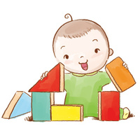

男童：体重7.9～12.3kg，身长72.1～81.8cm，头围48.2cm，胸围49.4cm。
男童：体重7.9～12.3kg，身长72.1～81.8cm，头围48.2cm，胸围49.4cm。
女童：体重7.2～11.8kg，身长70.0～80.5cm，头围47.1cm，胸围48.2cm。
认知：
有强烈的好奇心，什么事都想尝试一下。
宝宝有了独立的思想和意愿，如果父母的要求不符合宝宝的愿望，他就会反抗。
大动作：
能独自站稳并且可以弯腰捡拾东西，然后再站直；摔倒时能自己爬起来。
开始学走时，宝宝可能用脚尖走路。
模仿力进一步增强，吃饭时喜欢自己动手。
精细动作：
当妈妈给宝宝穿衣服时，宝宝能够配合妈妈伸出小胳膊和小腿。
有些宝宝甚至能握住勺子，但是还不太会使。
一些宝宝已经会涂鸦了。
语言：
个别说话早的宝宝能够说出一两句你能听懂的短句。
当你说一些常见物品时，宝宝能够指认。
能够按照指令做一些简单的动作。
他已经会用“爸爸”、“妈妈”和其他几个你能听懂的词了。